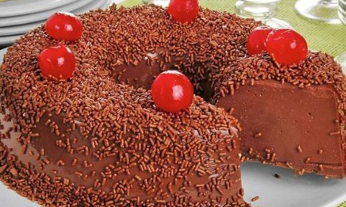

Arroz com brócolis
Ingredientes
- 1 xícara de arroz
- 200 grs de brócolis
- 1 cebola média
- 2 dentes de alho
- 1 colher de azeite
- Sal a gosto
- 500 mL de água
Modo de preparo
Com a cebola picada e o alho amassado, refogue no azeite. Acrescente o arroz e frite um pouco. Acrescente a água e o brócolis, tampe a panela e cozinhe em fogo baixo até a água secar.
Feijão com bacon
Ingredientes
- 500 grs de feijão
- 200 grs de bacon
- 1 cebola grande
- 3 dentes de alho
- Sal a gosto
- Cebolinha a gosto
- Água
Modo de preparo
Deixe o feijão de molho por 12 horas e escorra. Corte o bacon em cubos e frite com cebola e alho. Coloque os ingredientes na panela de pressão cobrindo com água, cozinhe por 30 minutos na pressão.

Pudim de chocolate
Ingredientes
- 1 lata de leite condensado
- 1 lata de creme de leite
- 1 colher de margarina
- 1 xícara de chocolate em pó
- 3 ovos
- 4 colheres de açúcar
- Granulado
- Cerejas
Modo de preparo
Em um liquidificador bata o leite condensado, creme de leite, margarina, chocolate, açúcar e ovos. Na forma de silicone por 8 minutos no micro-ondas. Decore com granulado e cerejas e gele por 2 horas.